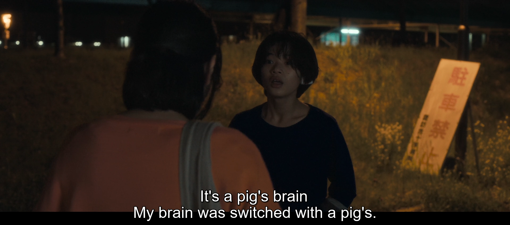
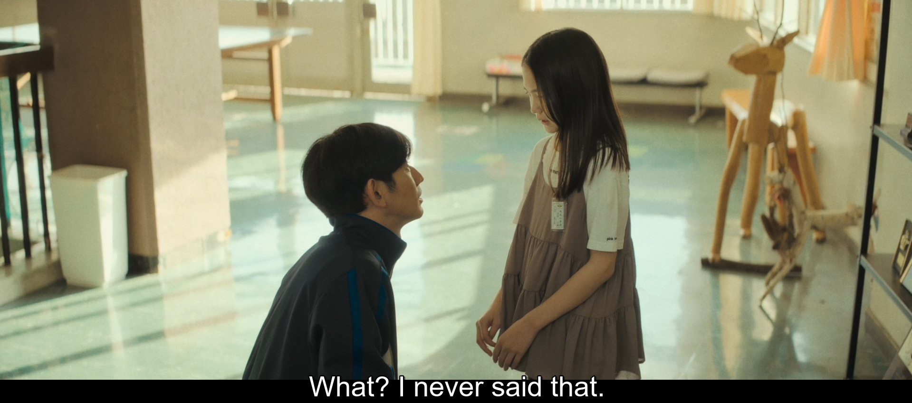
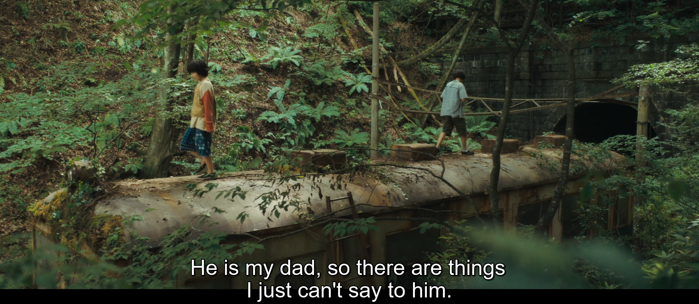
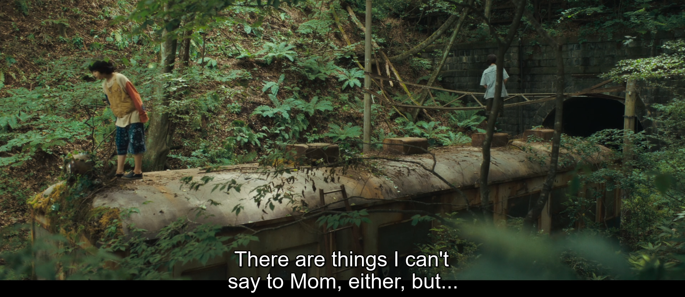
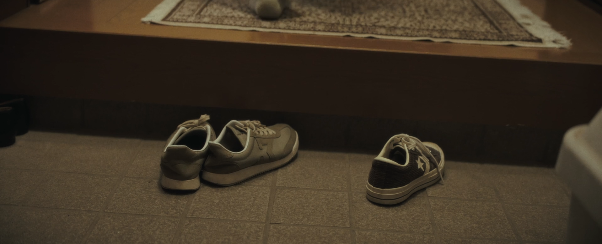
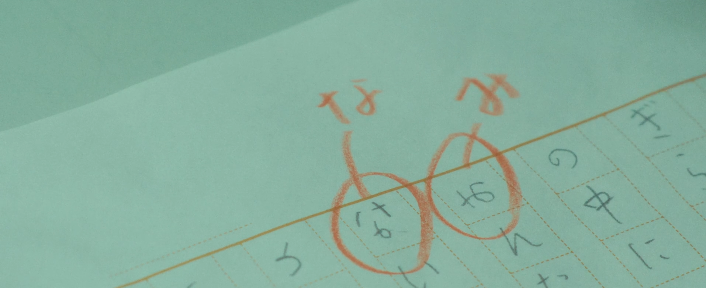

the first two acts of monster (2023) are based around the miscommunication and subsequent consequences of mr hori and saori (minato's mother). minato is a conflicted young gay boy who is unable to vocalize his inner turmoil to his mother in a way that she can correctly interpret, and when he does, saori misconstrues the source of his angst as abuse from mr hori. mr hori did not do anything, but is unable to explain himself because the administrative structure that surrounds him greatly mishandles the situation. they overcorrect wildly towards safe, rehearsed, PR-coded weasel words that only serve to enrage saori more. mr hori is similarly upset because he is an innocent man wronged, but his attempts at actually explaining himself only serve to do more harm.
this language barrier between the main two adult figures in the movie is only fueled by the things each character hears. what monster (2023) excels at is how realistically the characters react to the incomplete information they receive, and how it serves to color their biases of one another. mr hori is rumored to have been at the hostess bar (he wasn't, he just happened to be nearby), and saori is rumored to be an overprotective single mother (she is in fact a single mother, but hori approaches this with so little tact it only serves to fissure the relationship more). this is where we see one of the subtler themes of the movie. small, throwaway lines that the audience barely even registers can snowball and have drastic effects on how people perceive others around them. saori forms this mental image of mr hori as an abusive disrespectful sleazeball, and mr hori forms this mental image of saori as a whiny, misunderstanding helicopter mother before they even get to meet each other.
the first two acts of the movie are two adults in their own little world. it deals in the language of bureaucracy, lawyers, tabloids, and PR mismanagement. this is the structure that the adults in the movie operate in, and it is helmed by the principal, who serves to restrict both saori and mr hori simultaneously. the principal denies saori any information, and denies mr hori the right to actually explain himself. the principal is a jaded old woman who prioritizes images over truth. through a lifetime of existing within the administrative structure she becomes one of the figures that perpetuates it. in essence, she represents the source of the barriers between people in the movie.
more on the principal later. i've gone into detail about the language barriers that exist between mr hori and saori, but the most important language barrier in the movie is the one that exists between an adult and a child. with the exception of the principal and minato, there is no meaningful and honest exchange between an adult and a child in this movie where both parties understand what they're trying to say, and what they actually mean. a few glaring examples:

saori notices something has been wrong with minato and tries to confront him, but her guesses are almost hilariously off base. "are you a slow eater?" "did kamata do this?" (saori mentions this "kamata" name a few times in this movie, and we never learn who this is because they're so irrelevant in minato's life to be absent from the movie entirely). saori just doesn't know what's going on with her son. we learn later that the pig's brain is a euphemism for homosexuality, so this scene is quite literally minato coming out to his mother as gay in the most honest way he can muster, but she fails to pick up on it.

yet again another example of a small rumor coloring an entire image of a person. all minato's classmate is doing here is showing mr hori the cat, but mr hori assumes that she's directly accusing minato of having killed the cat. couple this with the previous behaviors minato has been exhibiting, and mr hori takes this to accuse minato of having weapons at home to his mother.


there are just some things children can't say to adults in this movie indeed. saori is not a bad mother by any means, she is a single mother trying her best, who will fight for her son in any way she can. just about the one thing she can't do is relate to him or understand him, as we see over and over again in the conversations they have. it's interesting that yori appears exactly twice, for around two minutes, in the act solely shown from saori's perspective. the boy closest to minato, who he spends countless hours with alone together, saori doesn't even know who he is.
there is a painstaking amount of effort dedicated to fully portraying the rich inner lives of the two boys, maybe about 20 minutes of the third act is solely dedicated to them exploring and building this new world out of the abandoned train cart, a place wholly detached from civilization, adults, and anyone else for that matter. it's just them in the train, separate from everyone else, and both times the adults find their hideout it is during nighttime or rain, with the sunstruck idyll of their lives hidden away from anyone except them.
mr hori is not a bad teacher, but he fails to understand the two boys as well. mr hori, after he figures it out, is truly accepting of the two boys and could have maybe been the one adult figure the two would have trusted enough to talk to, but the problem circles back yet again to the little things he says that makes the pair distrust him. mr hori teases the boys for not being manly enough, asks them to shake hands like men, so on. he never does this in a mean-spirited, bigoted way, but it doesn't matter becaues he perpetuates these stereotypes regardless. to yori's eyes he's the same as the bullies or his father. yori himself says it:
minato: why don't you tell mr hori? he's kind.the most that ever happens between the two boys is a hug in the train car. there's no kiss, there's no tender, verbal expressions of intimacy, there's nothing of that sort. the language that humans usually communicate affection in is generally absent between the two, and it's exchanged for simpler acts of trading snacks, showing each other how to make toys, and playing games.
the first reason for this is that they're children. acts of intimacy are a learned, mature behavior that they do not have access to at the age of 11. this is completely different from saying that they do not experience affection and attraction, they clearly do, but they express it in the ways only a child could. i hesitate to use the word 'innocent' because it implies naivety, and there's nothing naive about how they express themselves.
the second, more obvious reason for this, is that they're gay. in the world of monster, to be gay outwardly and openly, or even to be effeminate as yori is, is to be punished. the trope of a forbidden, taboo love that persists regardless of outward societal pressures. the language in which they communicate their affection is necessarily encrypted for their own safety.


saori completely misunderstands minato missing his shoe as just another strange, erratic thing he's up to, and mr hori only realizes their names in each other's essays after grading it. note that these things aren't hidden away, they're there for everyone to observe and notice. but the only people that truly understand what these symbols mean is themselves.
recall the first two acts, where two different people are unable to communicate with each other because of the structures that they exist within. and now compare this to minato and yori's relationship, where they are able to communicate with each other but are unable to communicate it to other people because of the structures they exist within too. and even then, minato is so conflicted and unsure of himself that he struggles to accept what yori is trying to give him that the barriers arise anyway. the relationship formed between yori and minato was not formed smoothly and easily. just past the playgrounds and the string lights is violence and avoidance from minato to yori who accepts it without fighting back.
minato is explicitly the more avoidant one in the relationship because he has not yet come to terms with the fact he is gay. there is something stirring within him every time he is with yori, something that he cannot quite put into words. he clearly knows what homosexuality is, but he's confused. he cuts his hair after yori touches it because he doesn't know how else to deal with it except physically, and he pushes yori away in the train car after gripping him tightly for the same reason. he's not repressing his feelings, he just doesn't know what to do with his feelings, and he has no trusted people in his life to talk to about it. much like the drawing of the monster, he does not have a pig's brain, but he's got so much love in his heart it swells up to his head. he is drowning in his own love.
minato has also seen yori being beaten to the ground countless times because of how yori acts, and he's naturally afraid of the same thing happening to him, despite thinking yori doesn't deserve it at all either. the only ever interactions minato has with yori inside school are either at an arm's length, or hidden away from everyone else.